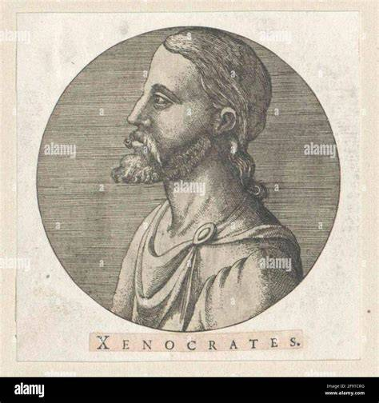

Welcome to the Mathematical World!
Xenocrates
The Successor of Plato
Xenocrates (c. 396 BCE – 314 BCE) was an ancient Greek philosopher, mathematician, and one of Plato’s closest students. After Plato’s death, Xenocrates became the head of the Academy in Athens, serving as its scholarch (leader) for nearly 25 years. He played a crucial role in preserving and developing Plato’s philosophy, while also adding his own original contributions in metaphysics, mathematics, ethics, and logic.

Early Life and Work with Plato
Born in Chalcedon, a city near Byzantium, Xenocrates became one of Plato’s most trusted pupils and even accompanied him to Syracuse. After Plato’s death in 347 BCE, his student Speusippus succeeded him as head of the Academy, but Xenocrates later took over in 339 BCE, directing the school until his death. His leadership helped solidify the Academy’s role as a leading center of Greek philosophical thought.
Philosophy and Contributions
Xenocrates developed ideas that expanded and systematized Plato’s doctrines:
- Metaphysics: He proposed three principles of reality—the One (unity and order), the Indefinite Dyad (duality and change), and the Soul (mediator between the two). This advanced Plato’s theory of Forms into a more structured framework.
- Mathematics: He believed numbers revealed cosmic truths. Odd numbers symbolized the masculine, even numbers the feminine, emphasizing balance in the universe.
- Ethics: Virtue was harmony of the soul, and happiness arose from living according to reason, with moderation and self-control at the core.
- Logic: He attempted to classify different kinds of knowledge and distinguished between realities of thought and realities of existence.
Religious and Spiritual Beliefs
Xenocrates maintained that the soul was immortal and divine. He also described daimones—intermediate spirits between gods and humans—an idea that influenced Neoplatonism and later religious philosophies. His vision blended rational metaphysics with spiritual belief.
Character and Life
Renowned for his integrity and self-discipline, Xenocrates was admired for his incorruptible character. As an ambassador to Philip of Macedon, he impressed the king with his honesty. Though reserved and austere, he commanded respect from Athenians and students alike, embodying the philosopher’s life of virtue.
Legacy
Although most of his writings have been lost, Xenocrates’ influence endured through the Academy and subsequent philosophical traditions. His formalization of Plato’s ideas guided Middle Platonism and later shaped Neoplatonism and early Christian thought. Today, he is remembered as both a guardian and an innovator of Plato’s legacy, blending mathematics, metaphysics, and ethics into a unified worldview.
Facts
- Born in Chalcedon, near Byzantium.
- Close associate and student of Plato.
- Became head of the Academy in 339 BCE.
- Associated numbers with cosmic principles.
- Influenced Middle Platonism and Neoplatonism.

All rights reserved by the Mathematical Unity
Contact: +8801400044645
Email: mathematicalhorse1453@gmail.com
Our Discord Server: Mathematical Unity [Ulus Riyadiyat]